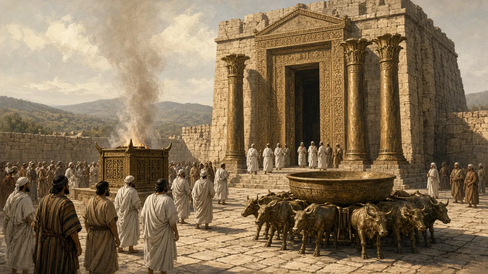
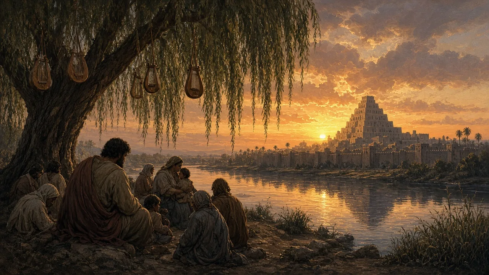
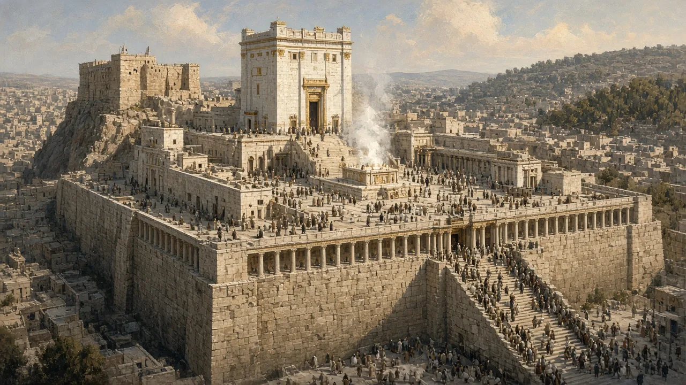
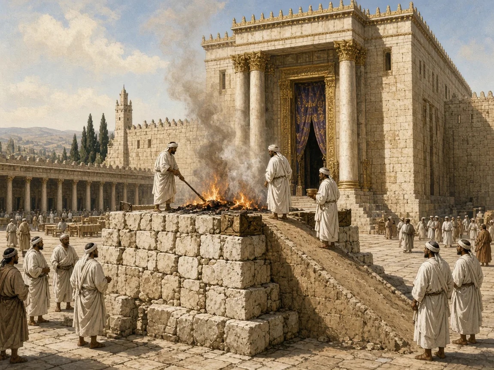
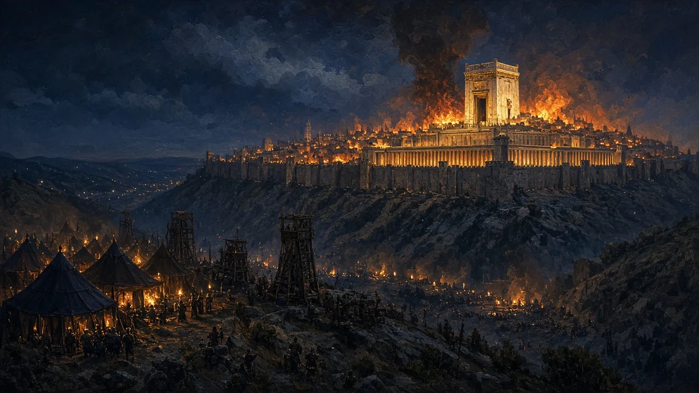
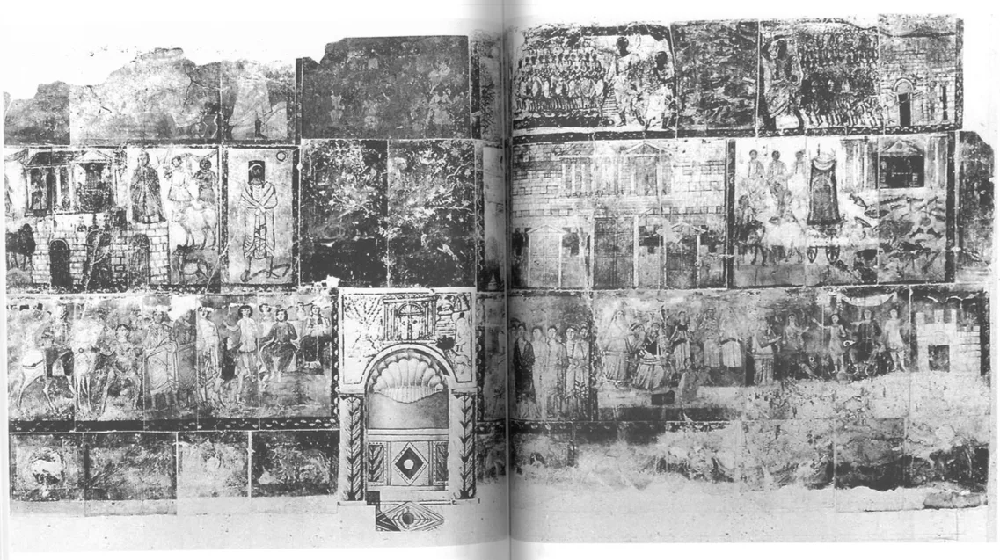
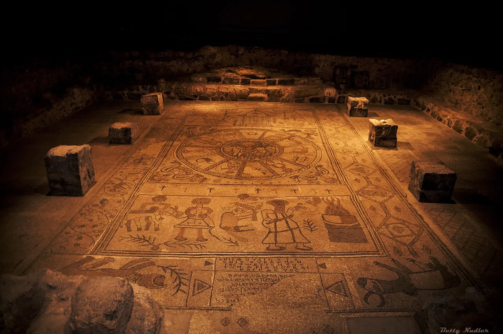
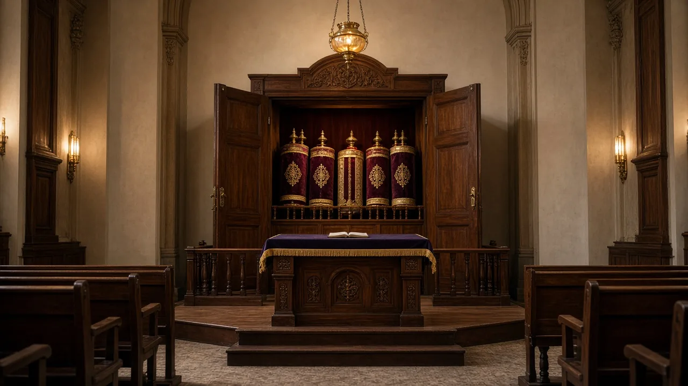

Hear the plea of your servant and of your people Israel when they pray toward this place.
Solomon’s prayer at the Temple’s dedication, 1 Kings 8:30 (NRSV)


So they read from the book, from the law of God, with interpretation. They gave the sense, so that the people understood the reading.
Nehemiah 8:8 (NRSV)

Some of them went up to Jerusalem, while the rest of them assembled in their towns and read the act of Creation.
Mishnah Taanit 4:2 (William Davidson Edition)
On behalf of king Ptolemaios… and queen Berenike… the Jews dedicated this prayer hall.
Dedication inscription from Schedia, Egypt, 246–221 BCE (trans. attalus.org)
…built the synagogue for the reading of the Law and the teaching of the commandments, as well as the guest-house… for the lodging of those who are in need of it from abroad.
The Theodotos inscription, Jerusalem, in Greek (trans. J. Price, CIIP)

Take words with you and return to the Lord… and we will offer the fruit of our lips.
Hosea 14:2 (NRSV); Jewish translation: “Instead of bulls we will pay [the offering of] our lips” (NJPS, 14:3)


